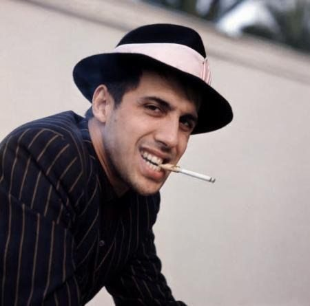

Adriano Celentano (Italian: [adriˈaːno tʃelenˈtaːno]; born 6 January 1938) is an Italian singer, songwriter, musician, actor, and filmmaker. He is dubbed "il Molleggiato" (the flexible one) because of his dancing.[1][2] Celentano has released many record albums which have enjoyed enormous commercial and critical success. He is often credited as the author of both the music and lyrics of his songs, although, according to his wife Claudia Mori, sometimes they were written in collaboration with others. Due to his prolific career and great success, both in Italy and the rest of the world, he is considered one of the pillars of Italian music.
